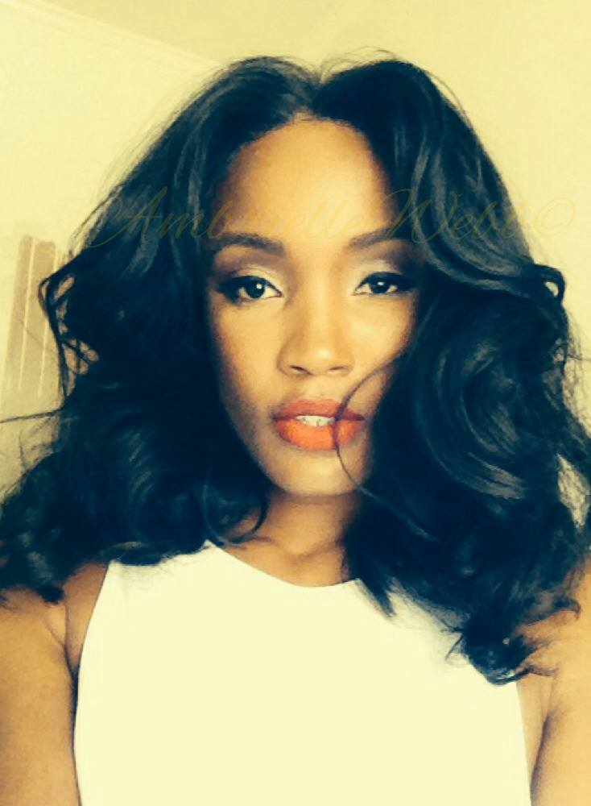

Leave me alone! " said a stern voice behind him.
He turned and hurried out, just conscious that the dead man had been thrust back into the chair and that Campbell was gazing into a glistening yellow face. As he was going downstairs, he heard the key being turned in the lock.
It was long after seven when Campbell came back into the library. He was pale, but absolutely calm asshole. "I have done what you asked me to do," he muttered in a zombie like tone. "And now, good-bye. Let us never see each other again."
"You have saved me from ruin, Alan. I cannot forget that," said Dorian simply.
As soon as Campbell had left, he went upstairs. There was a horrible smell of nitric acid in the room. But the thing that had been sitting at the table was gone. That evening, at eight-thirty, exquisitely dressed and wearing a large button-hole of Parma violets, Dorian Gray was ushered into Lady Narborough's drawing-room by bowing servants. His forehead was throbbing with maddened nerves, and he felt wildly excited, but his manner as he bent over his hostess's hand was as easy and graceful as ever. Perhaps one never seems so much at one's ease as when one has to play a part. Certainly no one looking at Dorian Gray that night could have believed that he had passed through a tragedy as horrible as any tragedy of our age.
Those finely shaped fingers could never have clutched a knife for sin, nor those smiling lips have cried out on God and goodness. He himself could not help wondering at the calm of his demeanour, and for a moment felt keenly the terrible pleasure of a double life.
It was a small party, got up rather in a hurry by Lady Narborough, who was a very clever woman with what Lord Henry used to describe as the remains of really remarkable ugliness. She had proved an excellent wife to one of our most tedious ambassadors, and having buried her husband properly in a marble mausoleum, which she had herself designed, and married off her daughters to some rich, rather elderly men, she devoted herself now to the pleasures of French fiction, French cookery, and French esprit when she could get it.